| Purpose |
| Details |
| Availability Checking is Required |
| Affect of Partial Shipments and Backorders Settings |
| Grade and Potency |
| Percent to Fill |
| Future Committed Orders |
| Substitute Items |
| Other Quantity 1 and 2 |
| Basic Preference Setup (Menu G4231) |
| Preference Definition |
| Preference Hierarchy |
| Example: Sales Order Entry (P4210/P42101), Menu G4211 |
| Advanced Preference Schedule (P4070) Sequencing |
| Advanced Preference Setup (Menus G4222 and G40311) |
| Preference Hierarchy (P40073/Menu G4222) |
| Advanced Preference Definition (P4071/Menu G40311) |
| Advanced Preference Detail (P4072/Menu G40311) |
| Additional Information |
| Frequently Asked Questions |
| Question 3: Does the Inventory Commitment Preference work with W Line type orders where a Work Order is created to manufacture the item? |
| Question 5: Can the inventory commitment preference be applied on an existing committed order? |
| Question 6: Why doesn't the preference branch get selected when the Sales Order Entry (P4210) version has the a branch plant populated in Defaults Tab Option #12 (Default Branch Plant)? |
Overview
The Inventory Commitment preference enables a single Sales Order line to be automatically committed from a different branch than the header branch, or be committed across several branches. This will increase the chances that an order will be completely filled, and gives users greater flexibility to commit from locations that make sense in their business.
Businesses using the Inter-branch process usually enter Sales Orders in a Branch/Plant that is a sales office and may not carry any inventory. They use Inventory Commitment Preferences during the Sales Order Entry process to resolve the sourcing Branch/Plant. The intention is to ship the order from the sourced Branch/Plant. This is a common business model where many sales Branch/Plants source their orders from one or more distribution centers. The sourcing may take place from multiple Branch/Plants, based on the preference setup and availability at the sourced Branch/Plants.
Use the Sequence Number field to tell the system which Branch/Plant you want to try to pull inventory from first, second, and so on. When the Route Code, Mode of Transportation, and Carrier Number fields are populated, these values will be used to populate the Sales Order Detail (F4211) records. If using a Carrier (33) or Mode of Transport (34) Transportation preference for these values, the information populated in the Inventory Commitment preference will be ignored.
The Inventory Commitment preference requires availability checking. The preference uses availability checking to select one or more branch plants to supply inventory for a sales order from a prioritized list of branch plants without regard to the header branch plant.
Line Types and the Inventory Commitment Preference
Work Order, Direct Ship and Non-Stock line types that do not perform availability checking are not supported by the Inventory Commitment Preference.
Ordinarily, clients populate the line type S in the processing options of Sales Order Entry (P4210) which will ensure that availability checking is performed on every item branch record that is listed in the preference.
If the Line Type is not populated in the Sales Order Entry (P4210) processing options, the Inventory Commitment Preference will look at the Item Branch record for the HEADER branch plant to select the line type that will be used for availability checking.
The program is not designed to look at the line type on each individual preference branch and determine whether or not availability checking is appropriate. The assumption is if you are using the inventory commitment preference then you want to check availability on every detail branch regardless of the line type.
So for example if the item branch record for the header branch plant uses an S line type but the preference branch uses a W line type and there is no inventory in the preference branch, the system will perform availability checking and place the W line type line on backorder.
Backorder = N, Partial Ship = Y - Ship available and cancel remainder. After all branches have been checked, any remaining quantity will be canceled.
Backorder = N, Partial Ship = N - Cancel if not enough available. After all branches have been checked, cancel order quantity.
Backorder = Y, Partial Ship = Y - Ship available and backorder remainder. After all branches have been checked, any remaining quantity will be backordered to the Header
Branch/Plant if the release is prior to 8.12.
Note: In 8.12 and 9.0 the fix for Bug 10965998: (Commitment Preference Failure) changed this functionality to look first at the preference for a preference branch with 0 % to fill and will assign the backorder to the first 0% to fill branch listed in the preference. If there is no 0% to fill branch in the preference the Header Branch/Plant will be entered on the detail line for the backorder.
Backorder = Y, Partial Ship = N - Backorder the entire line if there is not enough available. After all branches have been checked, backorder the order quantity to the Header Branch/Plant if the release is prior to 8.12.
Note: In 8.12 and 9.0 the fix for Bug 10965998: (Commitment Preference Failure) changed this functionality to look first at the preference for a preference branch with 0 % to fill and will assign the backorder to the first 0% to fill branch listed in the preference. If there is no 0% to fill branch in the preference the Header Branch/Plant will be entered on the detail line for the backorder.
The availability checking works together with the Grade and Potency fields. The availability routine will not use any grades/potencies that are not within the range. In addition, the "days before expire" in the Grade and Potency preference profile will determine if the expiration date is within the customer's allowable days. The availability will then truly be the quantity of the grades/potencies they allow and within an acceptable expiration period.
The Percent (%) to Fill in the Inventory Commitment preference is used to designate the percentage of an order quantity that must be filled in order to ship the available quantity from that branch.
If the minimum percent to fill is equal to 0 in any branch plant, the program will stop availability checking and backorder to the first 0 percent to fill branch.
No branch plants after the first 0 percent to fill branch will be evaluated.
If none of the branches have a record with 0% to fill, then the header branch will be assigned to the backordered line. This functionality is available beginning with EnterpriseOne 9.1 and with the ESUs for the following bugs in prior releases:
If 100% to fill is used, the entire quantity must be shippable from only one branch. This prevents shipping from multiple branches, but still searches a list of branches. If no branch can fill the entire order, the order is backordered to the header branch plant.
1% to 99% - if the branch can fill the percentage it ships the available and carries the remainder to the next branch and its percentage is checked. Each branch is still checked to see if the entire quantity can be shipped. If none of the branches can fill the entire order, the remaining quantity is backordered to the header branch plant. If a different branch plant needs to be designated for the backorder, setup a 0% to fill branch.
Example: Order quantity of 500 each
|
Preference |
Available |
% to Fill |
Minimum Order Quantity Available |
Result |
|
HOU |
100 |
50% |
250 |
No, skip branch |
|
ATL |
400 |
80% |
400 |
Yes, ship 400 |
|
SF |
96 |
95% |
95 (95% of remaining 100) |
yes, ship 96 backorder 4 to Header Branch/Plant |
The Inventory Commitment preference will use the Sequence Number field to determine the order to check for filling quantities.
When Branch Commitment Days are less than 999 in the Branch Plant Constants (P41001) and a Sales Order is entered with a Scheduled Pick Date that exceeds the Branch Commitment Days, availability checking is bypassed. Normally, the Inventory Commitment Preference uses Availability Checking to determine what branch to assign to fill the order.
In Sales Order Entry (P4210) Preference Tab Option #2 (Inventory Commitment Preference) can be set to a value of 2 (Activate Inventory Commitment Preference for all orders). When this setting is used, the system performs inventory commitment preference for all orders, regardless of the commitment window of the header branch/plant. Since availability checking is bypassed, the preference cannot assign the branch based upon available inventory so instead is assigns the first preference branch where the commitment days are exceeded.
The example below illustrates how this works:
Create a Version of SO Entry (P4210) with Preference Tab Option #2 (Inventory Commitment Preference) set to 2 (Activate Inventory Commitment Preference for all orders).
In the Branch Plant Constants, set Branch Commitment days to 7 on Branch 10 and 20 but to 999 on Branch 30.

Receive inventory only to Branch 30. Branch 10 and 20 have NO inventory.
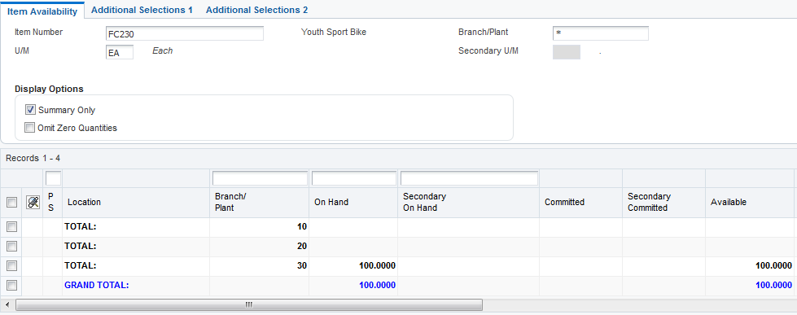
Setup the Inventory Commitment Preference for the Item
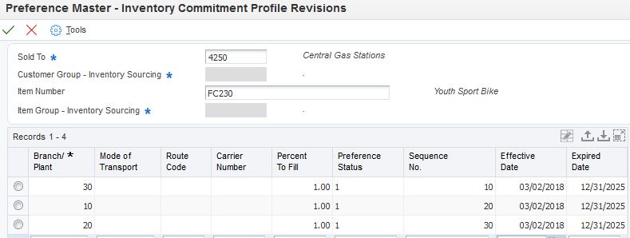
Create a new order with 20 in the header and a requested date more than 7 days in the future.

Enter 10 Units of the item with Branch 20 in the header and do not specify the Branch Plant on the line.
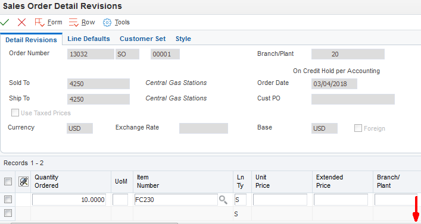
When the line is edited, Branch 10 is assigned to the order detail. Header Branch 20 is NOT assigned to the Future Committed Line.

Substitute Items can be used as an alternate source of supply for an item that is out of stock. If the regular item has no inventory available in any branch plant, the substitute item logic will kick in. Initially, the substitute item will be selected based upon the header branch plant, but the user can clear the branch plant after the substitute item is selected and this will allow the inventory commitment preference to search for other branches that may have the substitute item in stock. If the regular item has inventory in a different preference branch than the header branch, the preference branch will be selected and the substitute logic will not get called.
When Sales Order Entry (P4210) Commitment tab processing option #2 (Commit to Quantity 1 or 2) is set to 1 and the Inventory Commitment Preference is activated with a 1 or 2 in Preferences Tab Option #2 (Inventory Commitment Preference), Sales Order Entry will not retrieve the branch plant using the Inventory Commitment Preference. Other Quantity 1 and 2 processing options in P4210 are only intended to be used with Blanket and Quote Orders which do not commit inventory quantities and do not affect inventory availability for sales orders.
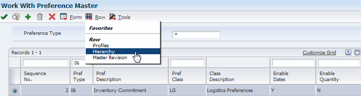
From Preference Master (P40070), inquire on Inventory Commitment (Pref Type 06) and take Row Exit to Hierarchy (P40073).
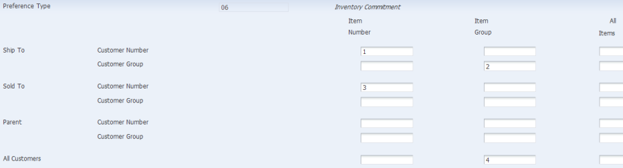
Note: In this example, Enable Quantity was not activated.
Verify that the hierarchy is set up as desired.
To set up the preference, in Preference Master (P40070) take the Row Exit to Profiles. On the Inventory Commitment Profiles (P40306) screen click Add (+) to add a new inventory commitment preference profile. Before setting up the profile, the desired hierarchy must be selected.
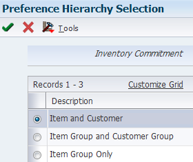
In this example, the preference is set up for a specific item and customer. The Branch Plant, Percent To Fill and Preference Status options are required, along with the Sequence Number if multiple branches are set up. Optional fields are Mode of Transport, Route Code and Carrier. If these are set up, they will populate the Sales Order Detail File (F4211) for an order created with this preference applied.

Set the Sales Order Entry (P4210) Preference Tab, Option #2 (Inventory Commitment Preference) to either 1 or 2.
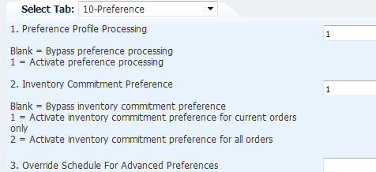
Item Availability (P41202) – this item has product shipped from and stored in 3 different warehouses.
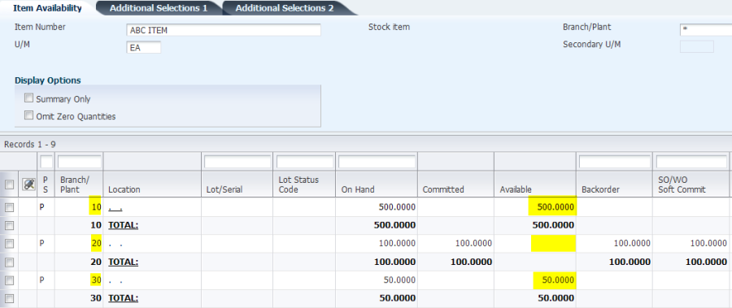
Using either P4210 or P42101, enter a sales order for Branch/Plant 30, quantity of 125. At least 50% of that quantity is not available in Branch 30 therefore the Inventory Commitment preference has assigned Detail Branch/Plant as 10.
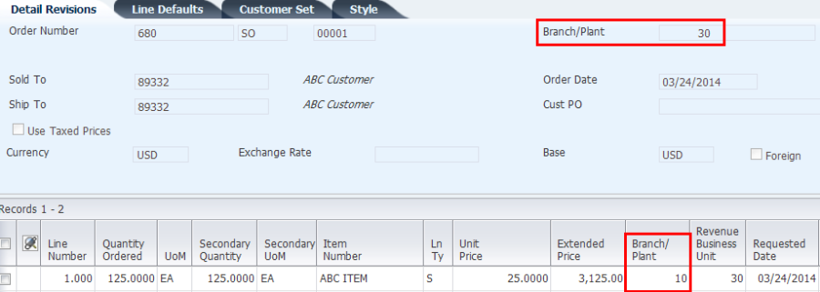
The present design of Advanced Preference (Releases 8.9 and forward) regarding the sequencing within the Preference Schedule is to follow the order listed below. It is not coded to consider the sequence order specified in Preference Schedule (P4070):
If the Inventory Commitment Processing Option is activated within the Sales Order Entry (P4210) Processing Option Preference tab, then the system will only resolve Order Preparation Days preference (22) & Delivery Date preference (03) again after the Inventory Commitment preference is resolved during the commitment processing time. All the other listed preferences will be resolved during the sales order detail grid tab down process (i.e., F4211 Edit Line Process).
Verify that preference hierarchy is set up as desired.

Add the Inventory Commitment preference name, selecting Preference Hierarchy to be used and Advanced Preference Type.

When adding the preference detail, the user will first need to select an option from the Preference Hierarchy defined in the Advanced Preference Definition (P4071).
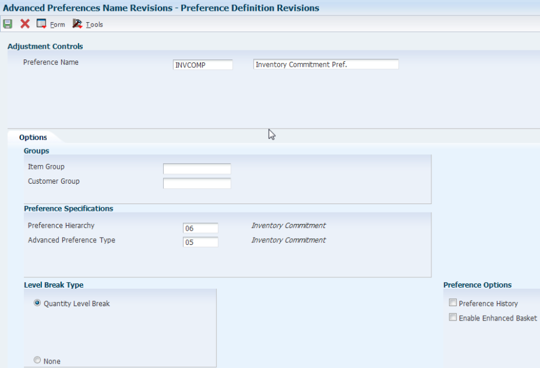
Add Item, Customer, From Level, UOM and effective dates.

Add detail by taking Row Exit to Pref Details

Advanced Preference Schedule (P4070/Menu G40311)
Add Advanced Preference Schedule with preference set up in previous steps
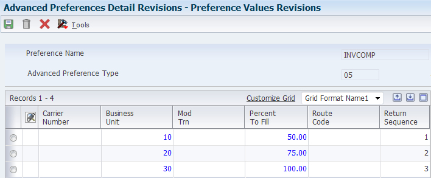
Sales Order Entry (P4210) processing option #2 on the Preference tab controls the use of the Inventory Commitment preference. Processing option #1 on the Preference tab does not affect the Inventory Commitment preference, nor do you need a version of Preference Selection for this preference.
When an order is entered, the first commitment preference branch that is actually used is defaulted into the Detail Branch/Plant field (MCU).
If a branch is manually entered in the Detail Branch/Plant that is different from the Header Branch/Plant, the branch entered by the user manually will be used and the Inventory Commitment preference will not change it. Therefore, no Inventory Commitment preference will affect this order.
If both a basic and advanced preference exist, the advanced preference will be resolved first and the basic preference will not be considered.
Note: The Inventory Commitment preference does not function with non-stock items, kits, configured items, direct ship orders, or W line type.
Answer 1: Yes. You must setup an item branch record even if the branch does not stock inventory. If the item branch record does not exist for the header branch, the Inventory Commit preference will issue the error Item Branch Record Does Not Exist (0294) and prevent the transaction.
Answer 2: Sales Order Entry (P4210) checks the line type from the header warehouse (S) to verify if the order activity rules were set up for the order type S1 with the line type S before it attempts to retrieve the preference item branch record. If this check passes, then the Inventory Commitment Preference logic will retrieve the item branch record according to the preference and default in the line type from the item branch (F4102). If the validation fails, the Order Status Flow error is issued.
To resolve the issue please execute the following steps:
Answer 3: No. Sales order lines entered with W line types will bypass availability checking and cannot execute the Inventory Commitment Preference logic which depends on Availability Checking in order to work properly.
Answer 4: The answer is no. The Inventory Commitment preference evaluates each order line independently of the others. There is no way with the inventory commitment preference to ensure that all order lines are assigned the same branch plant and same shipment number.
Enhancement Bug 17549988 - ENHANCE INVENTORY COMMITMENT PREFERENCE TO FILL ALL LINES FROM ONE BRANCH was entered to request this functionality using the new In-Memory Applications capability for JD Edwards EnterpriseOne.
Answer 5: It is possible to apply the inventory commitment preference to a previously committed order using Pick Slip Print (R42520) program. This is accomplished by setting up the Inventory Commitment Standard or Advanced Preference to list the branch plants in order of preference and then activating the Pick Slip Processing Options as follows:
This is usually done when availability checking has been bypassed during Sales Order Entry (P4210) and the Pick Slip Print (R42520) is used to select the preference branch and also hard commit to the location in the preferred branch that has the available inventory. In order for this to work it is important to make sure all branch plants listed in the inventory commitment preference have item branch records previously setup for the item in question.
Answer 6: Defaults Tab Option #12 (Default Branch Plant) is an override branch plant for the order detail line. The inventory commitment preference is ignored when this processing option is populated.